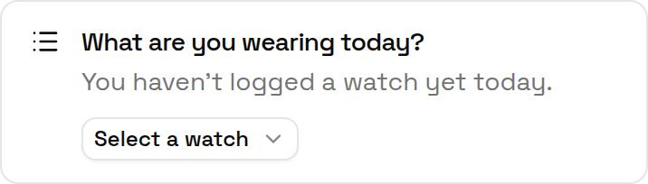
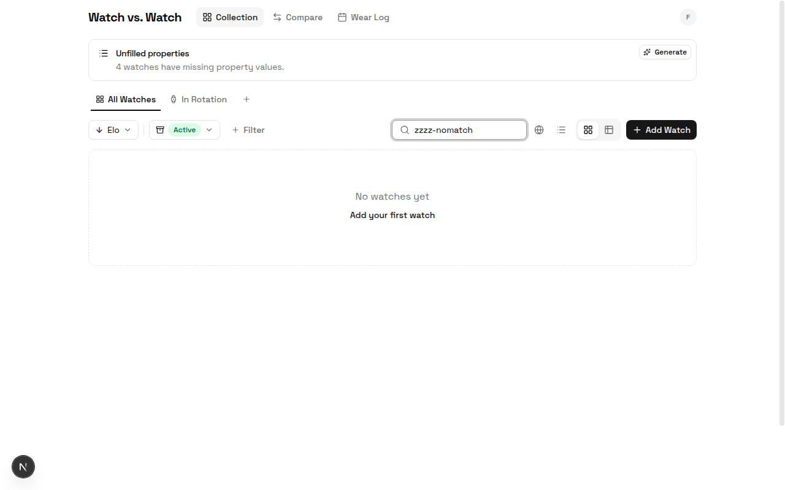
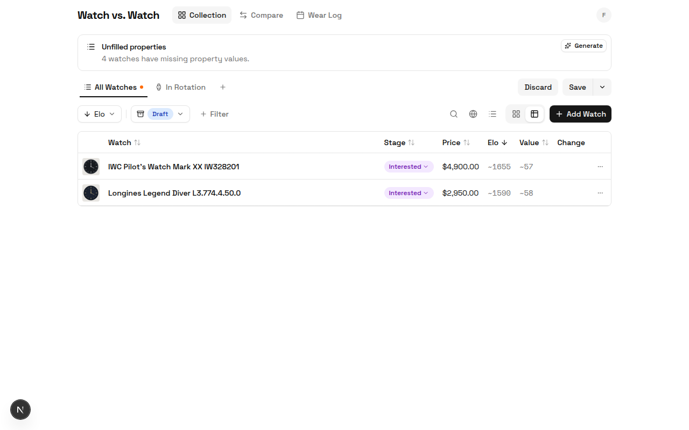
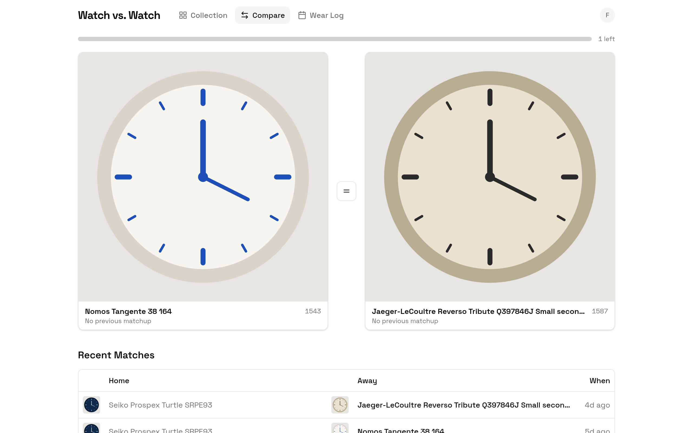
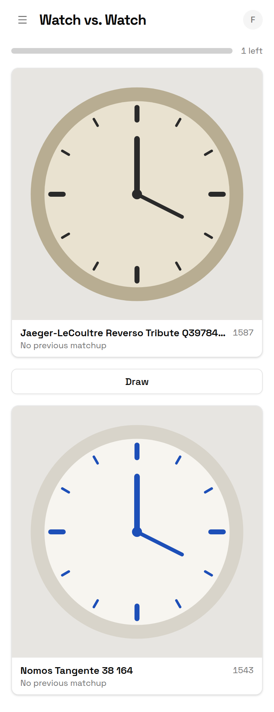
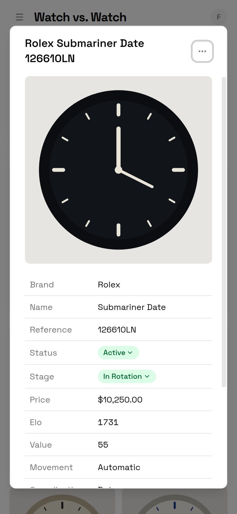
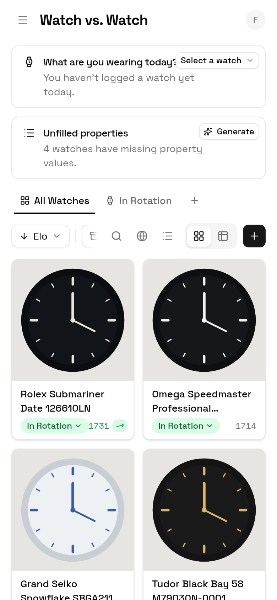
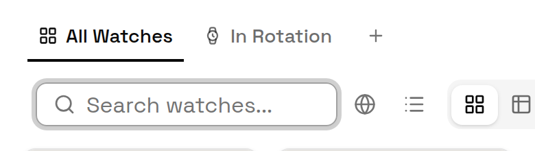
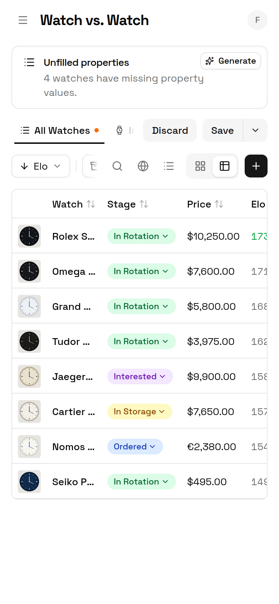

Discarding a scraped draft: what should it do?
One tap deletes a draft and its images permanently. The card is still open further up the thread.
- Archive, with Undo (recommended, assumed)
- Delete, with Undo
- Leave as is
42 findings from the audit, with overlaps merged and 2 dropped, become 18 PRs in build order. You answered 6 of the 8 big choices; the other 2 are assumed at my recommendation until you tap. PR 1 is already built on claude/project-thread-3vy3w7.
Bugs and false claims first, the built branch early, then redesigns after what they build on. Every PR except 5 and 11 can start now.
Two cards are still open in the thread. I’m assuming the first option of each; tapping anything else changes only the PR it gates.
One tap deletes a draft and its images permanently. The card is still open further up the thread.
The dialog closes and the watch lands mid-list among thousands. The card is still open further up the thread.
| C1 | K comparisons each | PR 7 |
| C3 | Rescore every 10 picks and on leaving Compare | PR 6 |
| C4 | Inbox view with header count | PR 10 |
| C7 | Leave as is: wear pickers stay In Rotation only | dropped P10 |
| C9 | Convert currencies | PR 16 |
| C10 | Collection first | PR 13 |
| C2 | Compare ranks only watches you own, not Sold or Interested | PR 7 |
| C8 | Least Recently Worn sorts strictly by date | PR 17 |
| C11 | Home-screen app stays Compare-only with an “Open full app” link | PR 18 |
| C12 | Phone toolbar: search takes the row, filters in a sheet | PR 14 |
| C13 | Phone table: two-line rows | PR 15 |
| C14 | Status colours stay raw Tailwind (no new tokens) | no PR |
| C15 | Dialogs keep their opening focus ring | no PR |
| C16 | N1 and N2 ship as built | PR 1 |
Every change stays inside the shadcn new-york components and neutral tokens already in app/globals.css; PR 5 adds the shadcn Sonner toast rather than a custom one.
Already built and checked on the thread branch; ships first so later screenshot PRs diff against it.
Files: components/ui/alert.tsx, watch-card.tsx, recent-wears-table.tsx, most-worn-table.tsx, watch-form-dialog.tsx, watch-compare.tsx, plus the size-* rewrite




The only finding that silently loses your data.
Files: components/watch-list.tsx, lib/actions/watches.ts, components/watch-form-dialog.tsx
A missed search currently reads as an empty collection.
Files: components/watch-list.tsx, app/page.tsx

Every later PR attaches before/after shots, so the flaky phone captures get fixed first.
Files: screenshots/lib/browser.ts, screenshots/fixtures/world.ts, eslint.config.mjs
Adds the app’s first toast system, which PRs 10 and 11 also use.
dismissInboxWatch) with an Undo toast; the menu’s Delete keeps its confirm.Files: components/ui/sonner.tsx (new), app/layout.tsx, components/watch-list.tsx, components/watch-card.tsx, components/sources-manager.tsx, lib/actions/inbox.ts

Answer: rescore every 10 picks and when you leave Compare.
Files: components/watch-compare.tsx, lib/actions/matches.ts, app/api/cron/calculate-elo/route.ts, components/elo-sparkline.tsx, components/watch-card.tsx

Answer: progress fills as every watch reaches K matches; pairing favours the least-compared.
Files: lib/actions/matches.ts, components/watch-compare.tsx, components/watch-status-dropdown.tsx (archive copy)

Files: components/watch-compare.tsx, components/recent-matches-table.tsx, app/compare/page.tsx

Files: components/watch-card.tsx, components/watch-list.tsx, components/wear-calendar.tsx, components/header.tsx
Answer: a built-in Inbox tab on the collection page with a header count and bulk actions.
Files: lib/actions/views.ts, lib/actions/inbox.ts, components/header.tsx, components/watch-list.tsx, components/sources-manager.tsx, lib/watch-list-query.ts


Files: components/watch-form-dialog.tsx, components/watch-list.tsx
/?watch=id) so back closes it; watch names on Wear and Compare link to it.Files: components/watch-list.tsx, components/watch-view-dialog.tsx, components/watch-card.tsx, app/wear/*

Answer: collection first. Wear pickers stay In Rotation only (C7: leave as is).
Files: app/page.tsx, components/wear-today-picker.tsx, components/backfill-properties-alert.tsx

Files: components/watch-list.tsx


Files: components/watch-list.tsx

Answer: convert with a stored rate table.
Files: prisma/schema.prisma (rate table), lib/watch-list-query.ts, components/watch-list.tsx, components/watch-view-dialog.tsx
Files: lib/actions/wear.ts, components/least-recently-worn.tsx, app/wear/page.tsx
Test on your own phone: standalone mode can’t be emulated in the harness.
Files: components/header.tsx